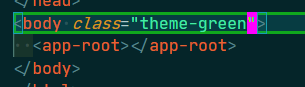
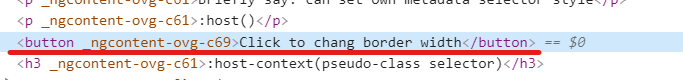

※apply only within the template of that component's metadata.
※will not apply into child component and ng-content
※Use :host (pseudo-class selector) to target styles in the element(Metadata Selector) that hosts the component
※The only way to target host element
※The host element is not part of component
※The host element is part of parent template
Briefly say: can set own metadata selector style
:host()
※Work like :host and will search ancestor of host element and element to enable styles when match
Briefly say: can set own template style base on ancestor or parent styles
:host-context(.theme-green) h3(turn the <h3> to green base on ancestor style)
※let style become global style
※use with :host to avoid bleed global styles, it will limit the style in the current component and descendants(even ng-content)
:host ::ng-deep
global css: border-style: solid
child css: color: green
※use browser native shadow dom(can't use outside css and outside style can't use inside style)
※emulates the shadow dom(can use outside css and outside style can't use inside style)
※disable encapsulation(like a global style)
_nghost for component host element
_ngcontent for element within the component's view
※The attribute(_ngcontent) of ng-content come from host element which is projected from parent component
